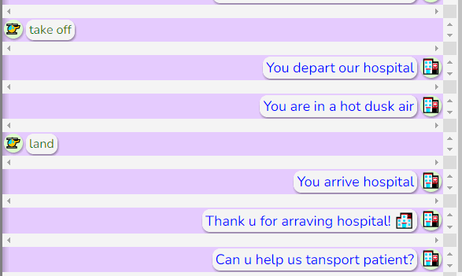
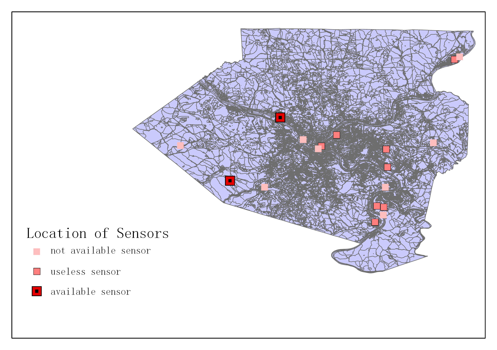

Chenwei Xu
MSCS@Northwestern
Resume for Machine Learning
Resume for Software Development
Intro:
Chenwei Xu, a master student in Computer Science at Northwestern University.
His primary research interest is Automatic Machine Learning, AutoML.
He also focus on real-world application of Computer Science technology.
Over the past few years, he has done many works in machine learning and software development.
Some of his work has been published or rewarded.
He is currently conducting research and developping on CycBlock, a new and powerful hyper-parameter optimization method.
He is also exploring its applications on time-sequential and real-world data. There is possible collarberation opportunities
in expending this work, including High-Performance Computing, Mathematical Algorthims Development, and but not limited to
real applications in various dataset.
He is looking for summer internship opportunities at 2023 in Machine Learning Engineers, Data Science, Software Development,
and Cloud Engineers. He is also looking for interesting project idea and collarberation opportunities. Feel free to contact with
him via Contact page.
Selected Projects:
| Name | Date | Description | Demo(click to see detail) |
|---|---|---|---|
| Chatbot | 2022.11 | It is a chatbot which you can control to play with. This chatbot is a helicopter can drop and load patients. It can fly between hospital, air and upper air. However, if it go to upper air, the helicoper will fail if not back to normal air. |
 |
| Drive-by Sensor | 2021.10 | We illustrate the importance of air quality to people’s lives and the necessity to generate air quality data for regions that do not have expensive air quality sensors. After visualizing the blocks that minority groups live in and the blocks which do not have sensors, we find that there is an overlap between these regions. We come up with promising solutions. Then, we illustrate two methodologies: Optimization and Reinforcement learning to determine the sensor placements. The most practical solution is using drive-by sensing to collect the data in blocks which does not have a sensor. We also design the approach to utilize reinforcement learning, learning the pattern of statistics, and predicting future data. This method is to use shared driving to maximize the sensor coverage and the profit while minimizing the cost simultaneously. Therefore, by applying four methods, we could provide air quality data to the minority group who has the way of accessing the data and raise the awareness of the seriousness of the pollution problem. |
 |